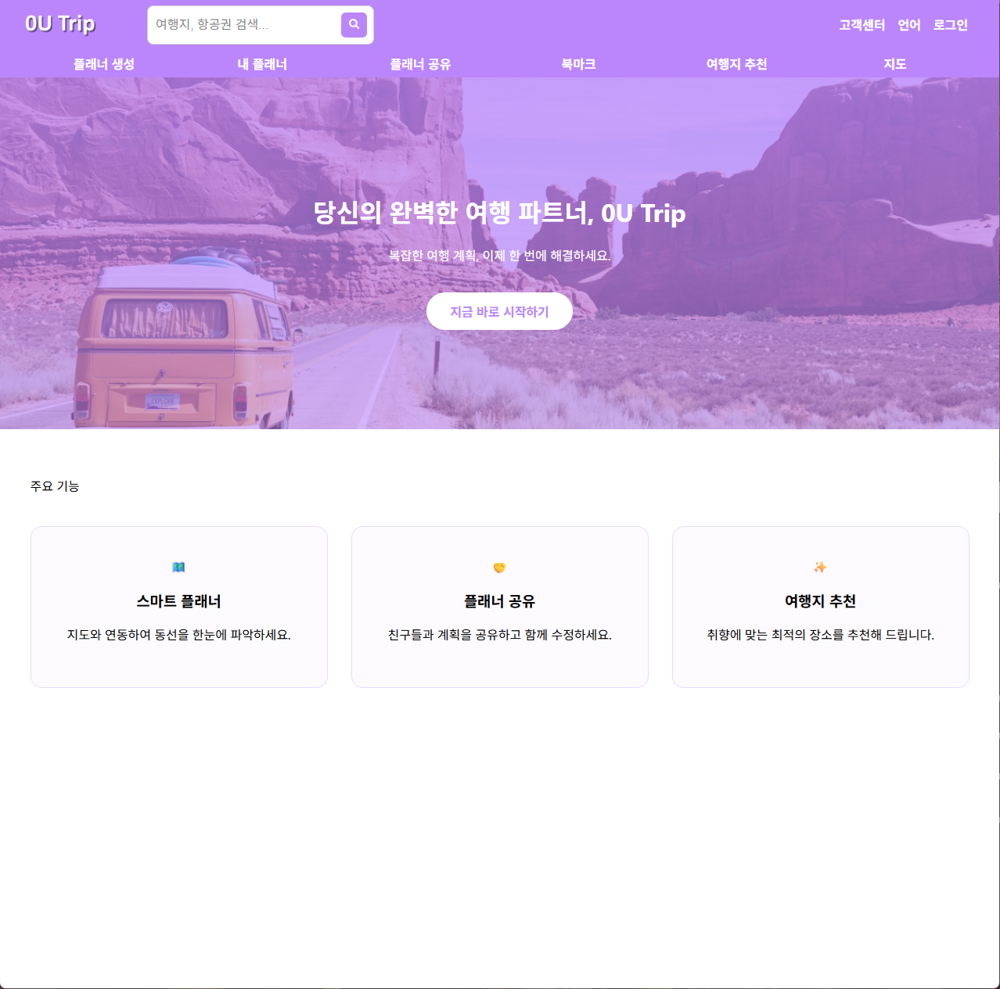
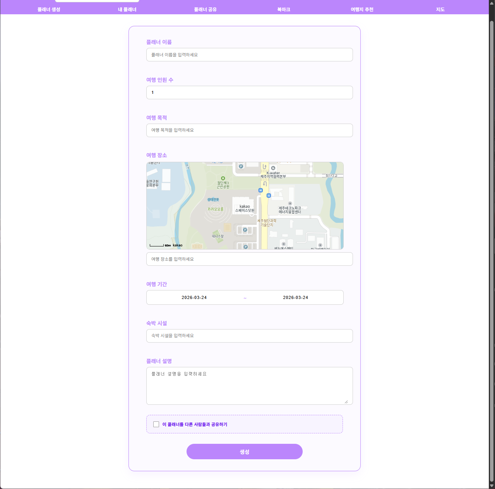
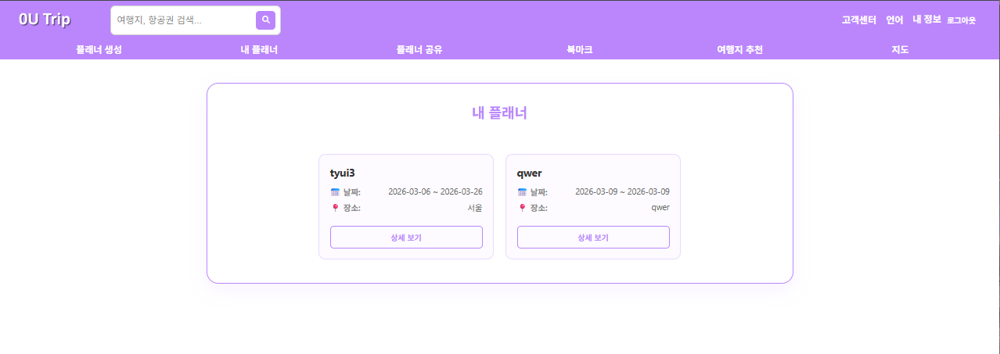
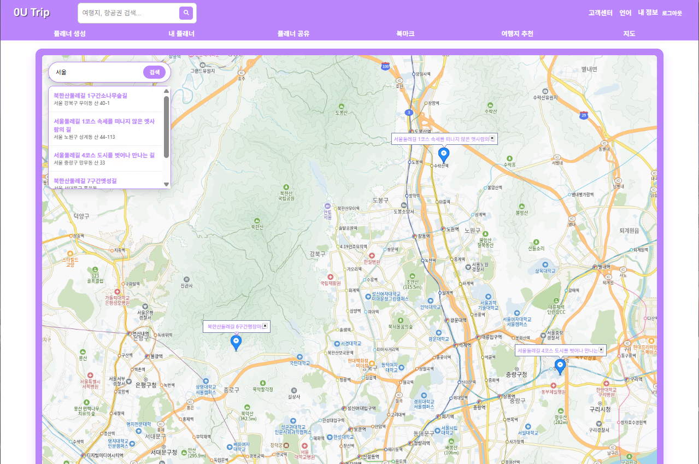
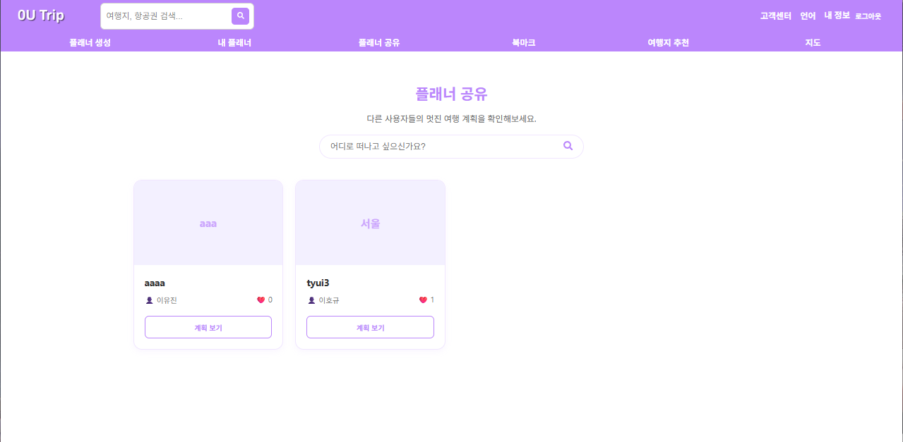
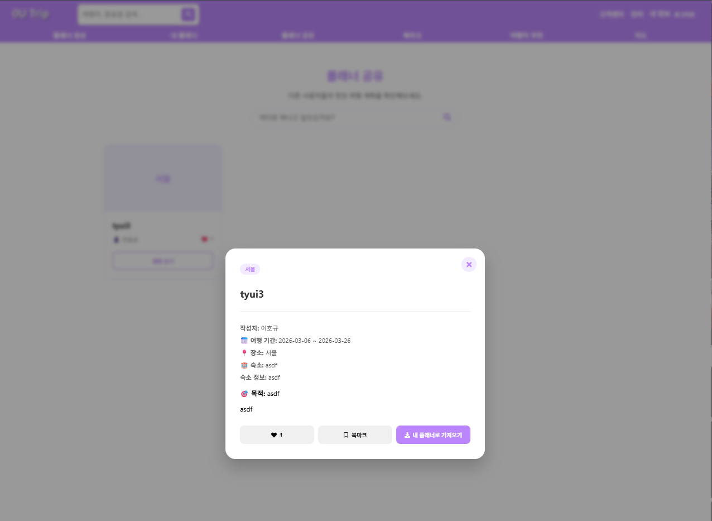

0U Trip Planner (Full-stack 여행 플랫폼)
⚙️ Tech: Node.js, Express, MySQL (Sequelize), React.js, Kakao Maps API, Passport.js
프로젝트 개요
0U Trip Planner는 나만의 여행 일정을 상세히 기록하고, 타인과 공유하며 소통할 수 있는 풀스택 웹 서비스입니다.
단순한 정보 기록을 넘어 공유(Share) 및 가져오기(Import) 로직을 통해 사용자 간 인터랙션을 극대화했으며,
Kakao Map API를 깊이 있게 커스터마이징하여 실시간 장소 검색 및 시각화 기능을 구현했습니다.

주요 기능 (Key Features)
- 스마트 플래너 CRUD & 상태 관리:
숙소, 인원, 목적 등 상세 데이터 처리 및 isMarked, isShared 플래그를 활용한 동적 상태 제어.


- 위치 기반 서비스 (LBS):
키워드 검색 및 연관 검색어 리스트 제공. 클릭 시 panTo를 활용한 부드러운 이동과 커스텀 마커/인포윈도우 렌더링.

- 소셜 공유 및 데이터 연동:
공개 게시판 구현 및 좋아요 시스템. Sequelize Include(Join)를 활용해 작성자 정보를 효율적으로 렌더링.


트러블슈팅 (Troubleshooting)
- 지도 렌더링 레이아웃 깨짐:
React 렌더링 시점 문제로 지도 크기가 0으로 잡히는 현상 ➡️ map.relayout() 비동기 호출로 해결.
- 데이터 가공 주체 최적화:
프론트엔드 부담을 줄이기 위해 백엔드 라우터에서 데이터 별칭(Alias) 및 가공 후 송신하여 유지보수성 향상.
- UI 스택 순서 이슈:
지도와 검색 리스트의 Z-Index 충돌 ➡️ Stack Context 재설정으로 UI 가시성 확보.
링크
🔗 GitHub Repository 바로가기
← 메인 페이지로 돌아가기